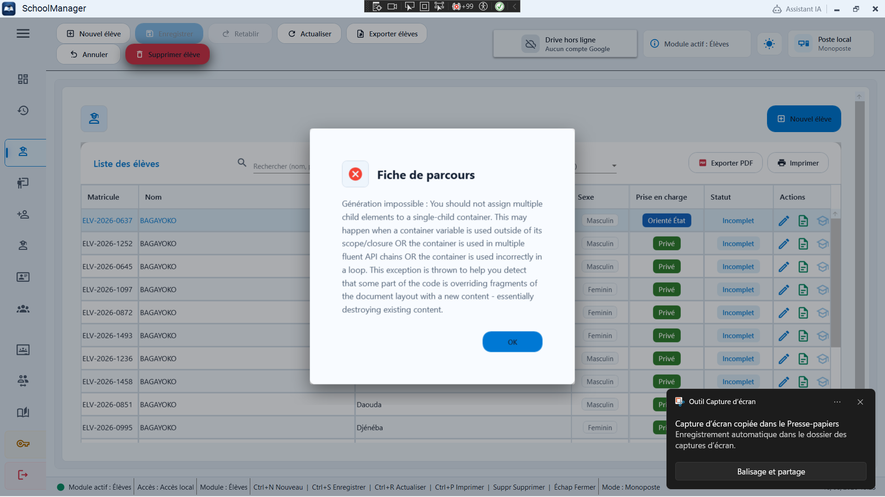
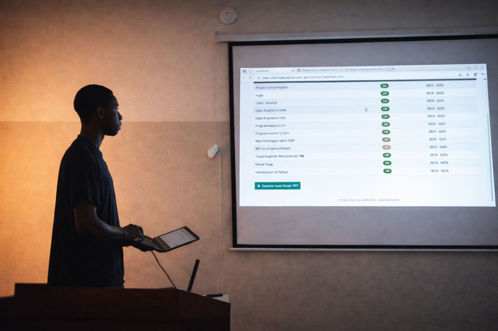
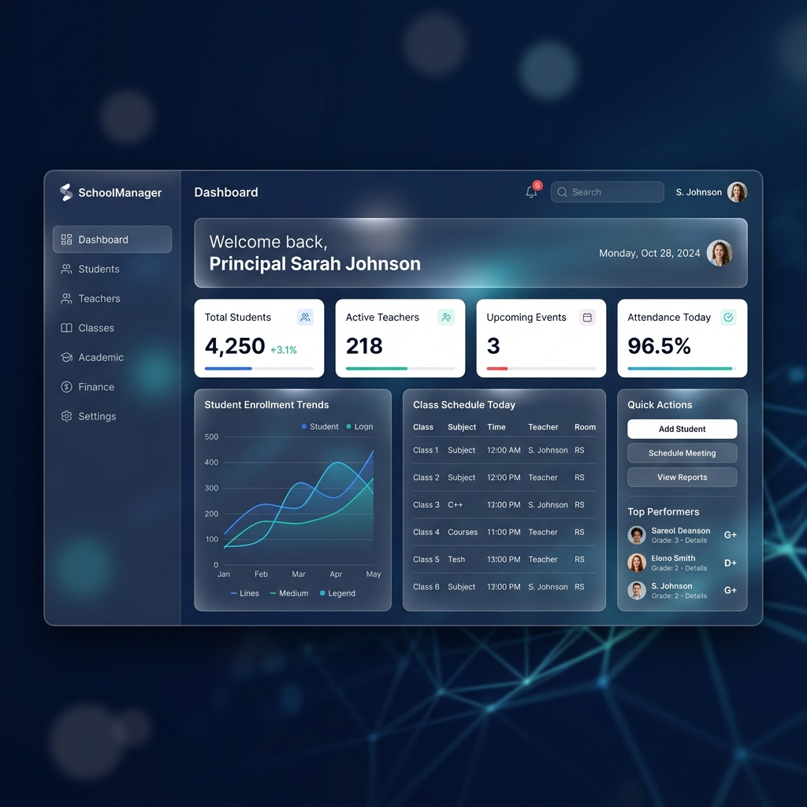
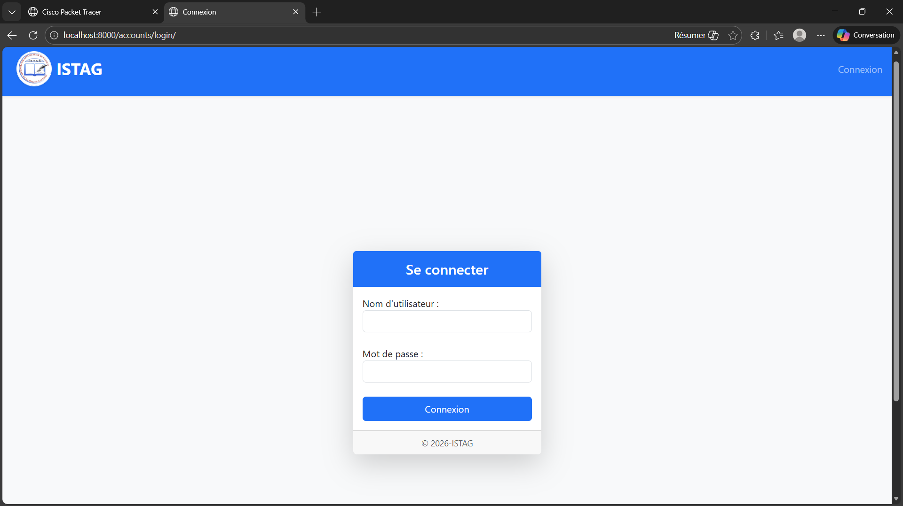
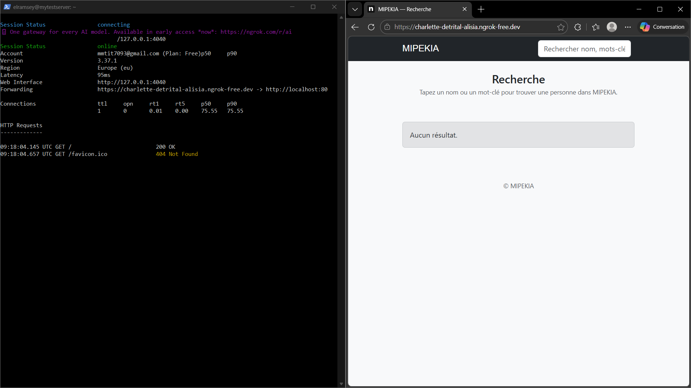
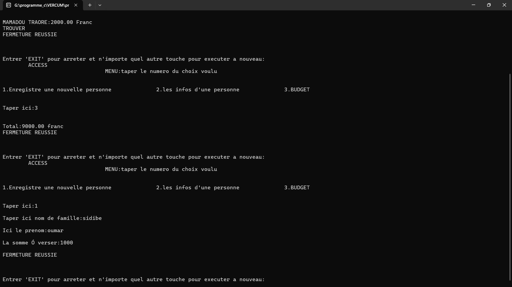
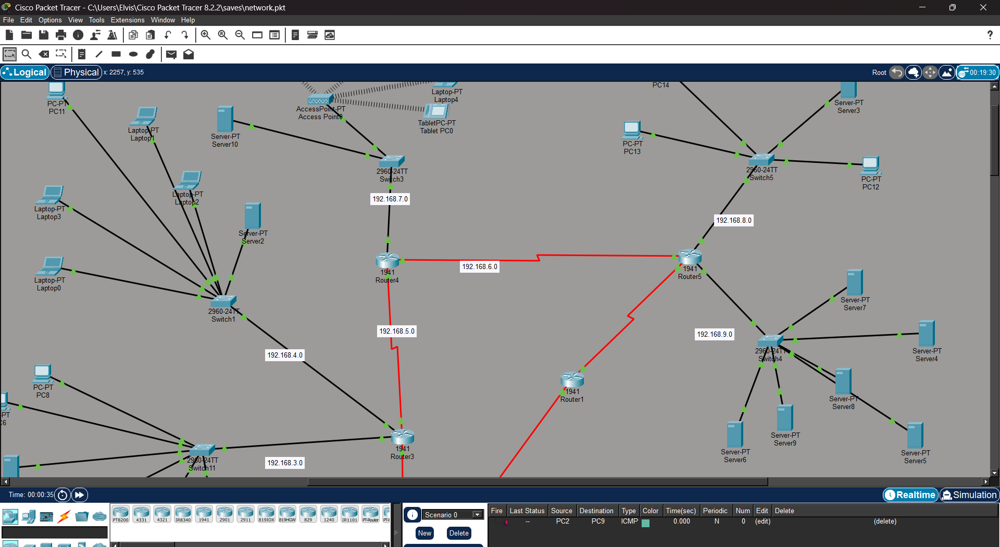
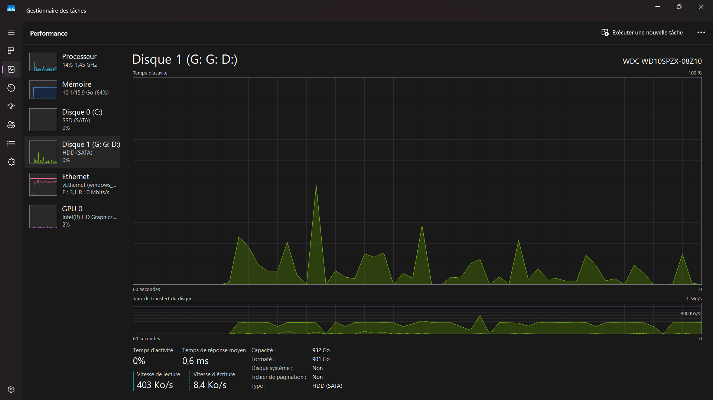
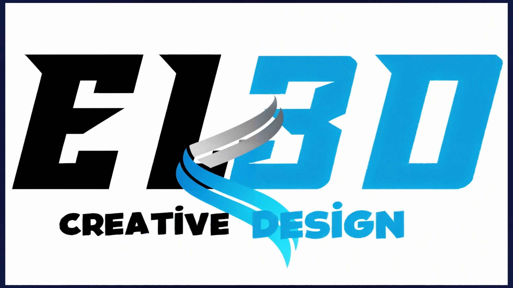

Bonjour, je suis Mamadou Modibo Traoré
Développeur logiciel (.NET 9, C#, React PWA, Django, Astro), administrateur systèmes/réseaux et créateur numérique — je conçois des solutions complètes, performantes, résilientes (Offline-First) et optimisées pour la production.
- Localisation : Mali
- Disponibilité : Ouvert aux opportunités

Projets sélectionnés
Exemples représentatifs de mes réalisations techniques et créatives. Cliquez sur "Voir" pour un résumé.
Quantix — Gestion de Finances (PWA)

SchoolManager Web — Portail & Documentation

Système de gestion de notes — ISTAG

MIPEKIA / MiniWiki — Plateforme Sociale

Logiciels console (C) & Outils Système

Admin Systèmes & Réseaux

Optimisation & Maintenance Windows

Arts visuels — 2D / Motion
3D — Modélisation & texturing
À propos
Ingénieur généraliste orienté informatique : développement d'applications desktop (.NET/C#), web & mobile (React PWA, Django, Astro), administration systèmes/réseaux, et création numérique 2D/3D. J'équilibre rigueur algorithmique, architecture logicielle propre et sens ergonomique pour livrer des solutions résilientes, maintenables et optimisées pour la production.
- Projets majeurs : SchoolManager (.NET 9 / WPF / IA locale Qwen), Quantix (React 18 / PWA Offline-First), SchoolManager Web (Astro 7), ISTAG & MIPEKIA (Django).
- Formations & Profil : Ingénierie Informatique, certifié développement & veille technologique continue.
- Langues : Français & Anglais.
10+
Projets réalisés & vitrine
Desktop & Web
.NET 9, React PWA, Django
Infra & 2D/3D
Linux, Réseaux, Maya, AE
Compétences
Web / Frontend & PWA
React 18 • Vite • PWA Offline-First • Astro 7 • Tailwind CSS • Dexie (IndexedDB) • JavaScript ES6+
Backend & API REST
Python • Django • Django REST Framework • HTMX • PostgreSQL • SQLite • Auth JWT
Desktop & IA Embarquée
C# (.NET 9, WPF, Clean Architecture) • C (système) • IA locale ONNX (Qwen) • Supabase
Admin Systèmes & Réseaux
Serveurs Linux, Nginx, BIND DNS, DHCP, NAS, Active Directory, Cloudflare Tunnels
Arts visuels 2D/3D
After Effects • Photoshop • Autodesk Maya • Substance Painter • Motion Design
Optimisation Windows & Scripts
PowerShell, administration de parcs, optimisation ressources & scripts automatisés
Contact
Pour toute proposition, recrutement ou collaboration, contacte-moi. J'accepte les entretiens techniques et démonstrations de projets sur demande.
- Email : Mmt17093@gmail.com
- Téléphone : +223 60 02 30 03
- LinkedIn : mamadou-modibo-traoré
- GitHub : mmt17079-stack
MIKEPIA(serveur local)
Le projet MiniWiki est déployé localement et accéssible via tunnel ngroks. Utilisez le lien ci-dessous pour y accéder.